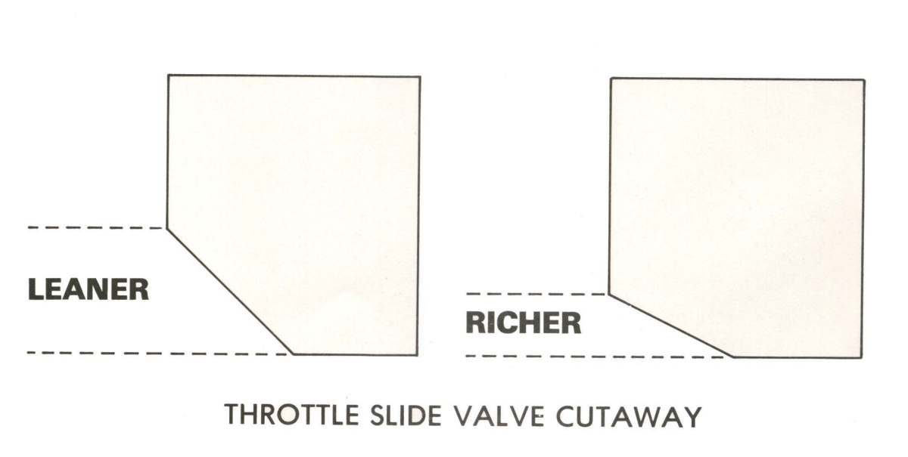
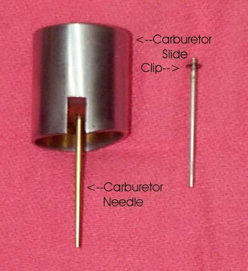
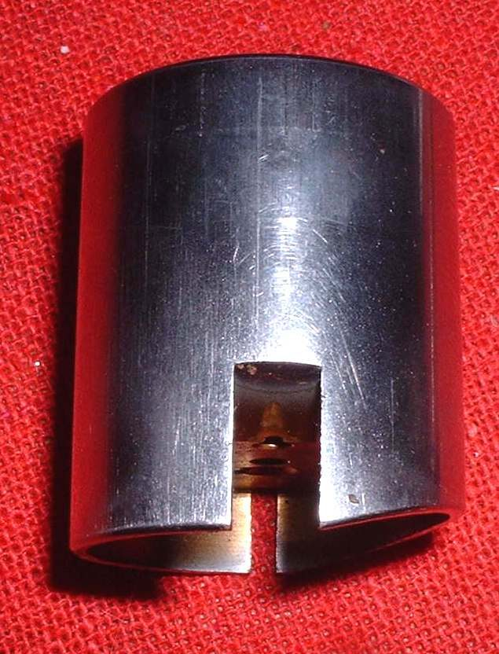
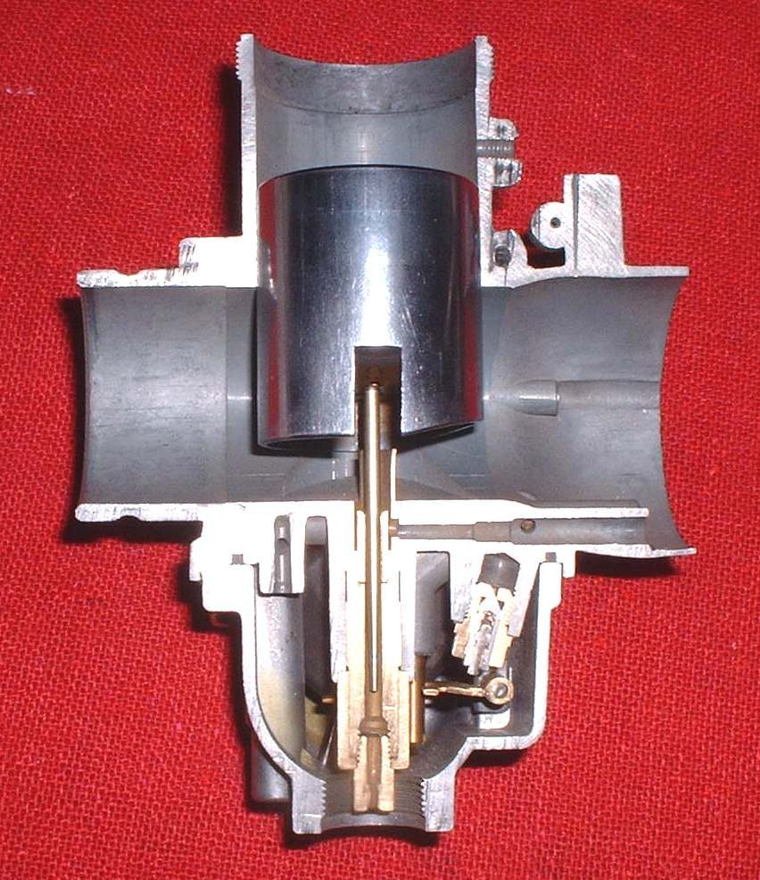
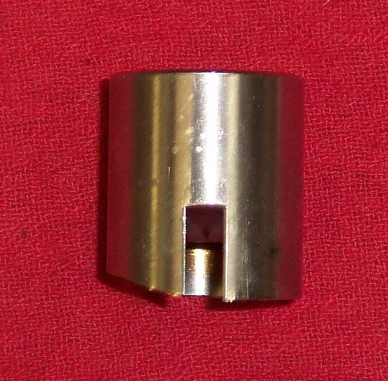

The throttle slide, also called the throttle valve, is a round or flat plug that moves across the carburettor throat. It sets how much air passes and how much fuel the needle lets through. It acts from idle up to about one third throttle, and joins the idle circuit and the needle in a smooth hand-over.
What it does
One face of the slide, on the air cleaner side, has a cut-out. A bigger cut-out lets more air under the slide at small openings and leans the mixture. A smaller one makes it richer. The slide can be cut for a left or right throttle stop screw. Some racing slides have no idle cut-out. On a CV carburettor the slide is joined to a rubber diaphragm or steel piston and lifted by vacuum.
Signs it is worn or failing
- Throttle that sticks open or does not return: Throttle sticks or will not close.
- Slow rev rise on a vacuum slide: Engine starts well but revs slowly.
- Stumble just off idle, or an idle that will not settle.
- Scoring on the slide or bore from grit.
When to replace it
Replace a slide that is scored, a diaphragm slide with a torn diaphragm, or one that sticks even when clean. A slide is costly and is rarely changed for tuning. Most bikes run best with the original.
What to match when buying
- Carburettor make and model, and the slide cut-out number stamped on it.
- The side of the idle bevel, and whether it is a diaphragm or a plain slide.
- Buy from the carburettor maker or a trusted source.
Fitting notes
- Fit the slide with its notch aligned with the guide. A slide that goes in backwards can jam the throttle open.
- Do not spray cleaner on diaphragms. Clean the slide with a damp rag.
- See Check the slide diaphragm.